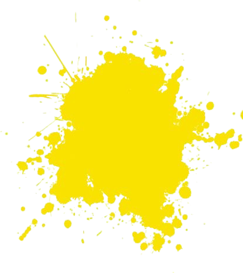

Artes Visuais
O Palácio de Ferro reforça as Artes Visuais com exposições individuais e colectivas. A proposta valoriza a arte, amplia a exibição de obras e aproxima mais público
às Ter-Dom


Sexta-feira de Trova
Um projecto que visa exaltar e promover a musicalização da poesia
às Sex

Trajectória
Projecto de valorização do artista como agente activo na divulgação da identidade cultural e na construção da memória colectiva
aos Sab

Mo Teatro no PF
Dar espaço e vez aos grupos ou companhias de teatro locais é um dos objectivos do projecto.
aos Sab

Cine no PF
A cada 15 dias, o Palácio de Ferro vira casa do cinema nacional. Exibições de curtas e longas-metragens, além de workshops e masterclasses para formar e divulgar
às Qui

Arte da palavra
Rubrica mensal sobre literatura. Valoriza textos, performances, livros e leitura, com feiras, debates e oficinas para movimentar o sector literário angolano
aos Dom

iModa
iModa é a evolução da MOCCO e visa potenciar eventos de moda em Angola no Palácio de Ferro
aos Sab

Kandengues no PF
Actividade mensal para crianças e adolescentes. Espaço para criarem e brincarem, com foco em escolas durante o ano lectivo, mas aberta a todos.
aos Sab

Ma Kotas
Rubrica dedicada à valorização da pessoa idosa como centro das ações artísticas e culturais. Promove a inclusão, partilha de experiência e memória coletiva, transformando o idoso em protagonista ativo da arte angolana.

Gospel no PF
Projecto que promove e exalta a música gospel nacional, valorizando a arte como Dom de expressão e reflexão. Mensalmente, o palco do Palácio de Ferro dá voz à força criativa dos artistas gospel angolanos.

Mwimbo Plugged
Projecto musical que promove o diálogo entre instrumentos ancestrais e modernos, valorizando os músicos instrumentistas de diversos géneros. Serve como plataforma de pesquisa e experimentação rítmica, preservando a identidade e o entrosamento estético da música angolana.

Dançar Kuya
Rubrica bimensal e inclusiva que destaca os géneros e estilos de dança angolana, valorizando o talento dos jovens praticantes e promovendo oportunidades profissionais e de empregabilidade nas artes.

Balumuka
Celebra a criatividade e o património da música ancestral angolana. A rubrica “Balumuka” promove concertos, oficinas e fóruns dedicados à música nacional, com três edições já realizadas no Palácio de Ferro.

Ngola Symphony Concert
Rubrica anual com três eventos que valorizam a música clássica em Angola, reunindo orquestras nacionais e músicos convidados de diversos géneros que enriquecem a malha musical angolana.